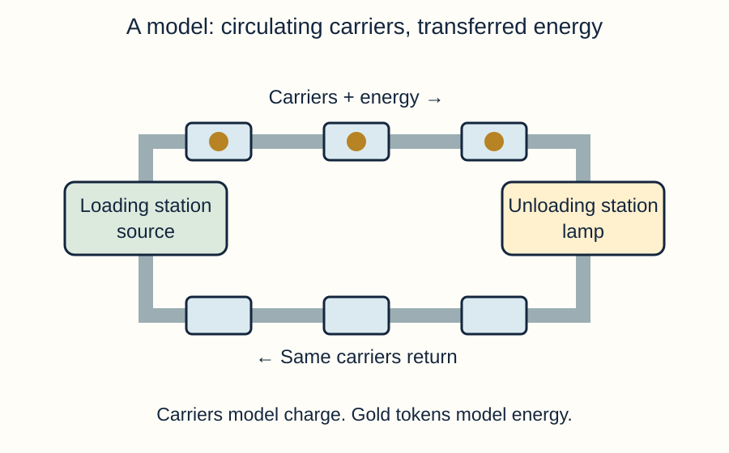

Draw in your book or this printed space. You may also use the simulator symbol view, save your circuit and explain the connections, or direct a scribe.
Draw a lamp and an open-switch symbol.
Model answer & mark scheme
Lamp: a circle with a cross. Open switch: two contacts with a gap and a raised blade.
Success criteria: Both recognisable symbols; switch gap visible.
One acceptable schematic; component positions may differ if the connections match.
Explain why opening the switch stopped the lamp in L1.
Model answer & mark scheme
It broke the complete conducting path, so steady current stopped throughout the single loop.
Success criteria: Link gap → incomplete path → no current through the lamp.
Support and a way to start
Recall the lamp symbol.
Show a gap at the switch.
Say what happens to the path.
Opening the switch changes ___, so ___.
Use the symbol reference, large symbols or a pupil-directed scribe. A clear connection matters more than a perfectly straight line.
Current
Rate of flow of charge.
Path
The conducting route.
Stretch & challenge
The parts are moved around without changing any connections. Must the current change?
Model answer & success criteria
No. Rearranging the same connections does not itself change the electrical circuit; the same source and components give the same steady current.
Success: a clear judgement supported by the relevant circuit path, model or measured evidence.
2. Today: test a model
Read the goals. Choose the evidence you will need.
LO1 · Describe current as the rate of flow of charge; distinguish charge from energy.
LO2 · Explain what a circuit model represents and evaluate a limitation.
LO3 · Plan and use current measurements to compare predictions about a single loop.
What work could show that you can evaluate a model?
Model answer & mark scheme
A verdict that maps the model parts, uses a test result and states a limitation.
Success criteria: Name evidence and a limitation, rather than simply saying the model looks realistic.
Support and a way to start
Read LO1 with a partner.
Find the word evaluate.
Choose a product that shows your reasoning.
I can show ___ by ___.
Rehearse aloud. Point to the diagram or direct a partner to record your words. Keep the same scientific explanation.
Evaluate
Judge strengths and limitations.
Stretch & challenge
Is a realistic-looking picture always the best model?
Model answer & success criteria
No. A useful model represents the important relationships and makes useful predictions. Appearance alone does not establish accuracy.
Success: a clear judgement supported by the relevant circuit path, model or measured evidence.
3. A model helps us explain
Match each example to the idea it represents.
A scientific model is a simplified representation used to explain or predict.
A physical model can be handled. A diagram or computer model is an abstract representation.
Charge is already present in conducting materials. Current is its rate of flow. Energy is transferred from the source to components.

Classify a loop of linked toy carriers and Circuit Lab as physical or computer models.
Model answer & mark scheme
The toy carriers form a physical model; Circuit Lab is a computer model. Neither is the actual moving charge in a metal wire.
Success criteria: Classify both and distinguish representation from the real system.
Support and a way to start
Name one thing you can handle.
Name one thing on the screen.
Explain what each represents.
This is a ___ model because ___. It represents ___.
Rehearse aloud. Point to the diagram or direct a partner to record your words. Keep the same scientific explanation.
Model
A simplified representation.
Charge
An electrical property of particles.
Energy
Transferred by the circuit to its surroundings.
Stretch & challenge
Why can a model be useful even when it leaves things out?
Model answer & success criteria
Simplification makes a particular relationship easier to understand or test. It becomes misleading if its omissions matter to the question being asked.
Success: a clear judgement supported by the relevant circuit path, model or measured evidence.
4. Carriers return; energy transfers
Use the analogy to explain the lamp.
Carriers represent charge; the number passing a point each second represents current.
Energy tokens represent energy. The loading station represents the source; the unloading station represents the lamp.
The carriers keep circulating. Tokens are transferred at the lamp. Real charge is not a train carrying lumps of coal.
Identify the source, charge, current and energy in the carrier model.
Model answer & mark scheme
Loading station → source; carriers → charge; carriers passing per second → current; tokens → energy.
Success criteria: All four mappings, including rate for current.
What stays the same across one lamp in a steady single loop?
Model answer & mark scheme
The rate of charge flow is the same on either side. Energy is transferred by the lamp, but charge is not consumed.
Success criteria: Keep current and charge separate from energy.
Support and a way to start
Point to a carrier.
Point to its energy token.
Explain what returns after unloading.
The ___ represents ___. It changes/stays the same because ___.
Rehearse aloud. Point to the diagram or direct a partner to record your words. Keep the same scientific explanation.
Analogy
An explanation using a familiar comparison.
Rate
How much passes in a given time.
Stretch & challenge
What is wrong with removing a carrier at the lamp to represent light?
Model answer & success criteria
That would suggest charge is used up. Transfer an energy token instead and keep the carrier in the circulating model.
Success: a clear judgement supported by the relevant circuit path, model or measured evidence.
5. Measure along the path
Watch the meter connection. Describe the decision.
An ammeter measures current in amperes (A). It is inserted in series, along the path.
Remove one wire. Join its two ends through the ammeter. Do not leave a wire bypassing the meter.
In Circuit Lab, compare current magnitudes. A minus sign can mean the meter terminals face the opposite way.
Why must the ammeter replace a wire in the path?
Model answer & mark scheme
The charge flowing through that part of the circuit must pass through the meter. A bypass means the current can avoid the meter.
Success criteria: Ammeter in series; no bypass.
Does −0.59 A mean a smaller current than +0.59 A?
Model answer & mark scheme
No. Their magnitudes are equal; the sign describes direction relative to the meter terminals.
Success criteria: Compare magnitudes and explain sign.
Support and a way to start
Find the two ends of one wire.
Replace that wire with the meter and two connections.
Read the current and its unit.
I put the ammeter ___ because ___.
Choose builder, connection director or recorder. Use the starter circuit if needed. Read one value at a time; a partner may type your dictated values.
Ammeter
Measures current.
Magnitude
Size without the positive or negative sign.
Stretch & challenge
Why is placing an ammeter directly across the battery a poor measurement method?
Model answer & success criteria
Its very low resistance gives a bypass with excessive current. It measures that new path and changes the circuit; it does not measure the original lamp current.
Success: a clear judgement supported by the relevant circuit path, model or measured evidence.
6. Two predictions. One fair test.
Write both predictions before opening the lab.
Claim A: the lamp uses up current, so less current leaves it.
Claim B: the same steady current flows into and out of the lamp.
Keep the same source setting, lamp and switch state. Compare two positions in the same loop.
What readings would distinguish the two claims?
Model answer & mark scheme
A predicts a smaller current magnitude after the lamp; B predicts equal magnitudes. Measure on both sides with the circuit otherwise unchanged.
Success criteria: State contrasting predictions and control the other conditions.
Support and a way to start
Copy A and B as short predictions.
Circle what you will measure.
Name one thing to keep the same.
If ___ is correct, I expect ___. I will keep ___ the same.
Rehearse aloud. Point to the diagram or direct a partner to record your words. Keep the same scientific explanation.
Prediction
Expected result before a test.
Control
A condition kept the same.
Stretch & challenge
Would changing the battery between measurements make the test stronger?
Model answer & success criteria
No. Any difference could then be caused by the changed battery setting rather than the measurement position.
Success: a clear judgement supported by the relevant circuit path, model or measured evidence.
7. Test the circulating-charge model
Work in pairs. Each person keeps a record.
Open the lab guide. Start with a 6 V source, one 10 Ω lamp and a closed switch.
Insert two ammeters in the same loop, one on each side of the lamp. Record their magnitudes.
Open the switch. Record again. Swap roles and explain the result.
Record the two meter readings for the closed and open circuit. Which prediction fits?
Model answer & mark scheme
With the supplied two-meter starter, both closed-loop meters are about 0.59 A; both are 0 A when open. Equal magnitudes support Claim B. Record actual readings and retain units.
Success criteria: Two positions × two switch states, units A, correct comparison.
Write one sentence explaining the lamp without saying it uses up current.
Model answer & mark scheme
The lamp transfers energy to its surroundings while the same rate of charge flow passes into and out of it in the closed single loop.
Success criteria: Energy transfer and equal current linked correctly.
Support and a way to start
Use the two-meter starter if needed.
Read meter 1, then meter 2.
Record the switch state before changing it.
At position ___ the current was ___ A. This supports ___ because ___.
Choose builder, connection director or recorder. Use the starter circuit if needed. Read one value at a time; a partner may type your dictated values.
Steady
No longer changing with time.
Evidence
Results that support a judgement.
Stretch & challenge
Does a computer result alone prove what every real circuit will do?
Model answer & success criteria
No. It shows what this programmed model predicts. Real meter measurements and knowledge of the model assumptions are needed to evaluate its real-world accuracy.
Success: a clear judgement supported by the relevant circuit path, model or measured evidence.
8. Check the explanation
Choose a letter. Give a reason before review.
0.20 A, because the lamp uses half.
0.40 A, because charge is not used up.
0 A, because it all becomes light.
0.80 A, because the lamp makes charge.
The current entering a lamp is 0.40 A in a steady single loop. What leaves the lamp?
Model answer & mark scheme
B: 0.40 A. Charge is not consumed by the lamp; it transfers energy.
Success criteria: 1 mark for B; 1 for conserved charge / equal current in the same loop.
A motor replaces the lamp. Current entering it is 0.25 A. What leaves it, and why?
Model answer & mark scheme
0.25 A. The motor transfers energy while the same steady current passes through the single loop.
Success criteria: Correct changed-context response with a scientific reason.
Support and a way to start
Read 0.40 A as the starting current.
Think about charge, then energy.
Choose and explain your own answer.
I choose ___ because the lamp transfers ___, while ___.
Rehearse aloud. Point to the diagram or direct a partner to record your words. Keep the same scientific explanation.
Steady current
The same rate of flow over time.
Stretch & challenge
If the lamp transfers more energy each second, must it use up more charge?
Model answer & success criteria
No. Energy transfer is not charge consumption. A different operating condition can change current throughout the loop, but it is still equal on both sides of the lamp.
Success: a clear judgement supported by the relevant circuit path, model or measured evidence.
9. You decide which feedback helps
Keep your own explanation visible. Judge the prepared feedback.
Prepared chatbot-style feedback, written for this task; no live chatbot is used.
1. “Add both meter readings to support your explanation.”
2. “Say some current turns into light.”
3. “Your simulator results prove the model is perfect for every real circuit.”
Accept, adapt or reject each suggestion. Justify your decisions using your own result.
Model answer & mark scheme
1 Accept: measured magnitudes make the evidence explicit. 2 Reject: the lamp transfers energy, not charge/current into light. 3 Reject or adapt: the results agree with this simulation; real tests and limitations still matter.
Success criteria: Judge all three; use science/evidence rather than the confident wording.
Revise one sentence. What decision remained yours?
Model answer & mark scheme
Example: “Both meters read about 0.59 A, supporting equal current in the single loop. The lamp transfers energy; it does not use up charge.” The pupil chose what to accept and checked it against evidence.
Success criteria: Keep a first attempt, one justified change and a brief disclosure: used prepared feedback, checked against my measurements.
Support and a way to start
Read one suggestion at a time.
Label it accept, adapt or reject.
Use one reading or science idea as a reason.
I ___ suggestion ___ because my evidence shows ___.
Rehearse aloud. Point to the diagram or direct a partner to record your words. Keep the same scientific explanation.
Feedback
Suggestions for improving work.
Verify
Check against evidence.
Stretch & challenge
Why could useful and incorrect advice appear in the same generated response?
Model answer & success criteria
A generative system produces text from learned patterns; fluent language is not a guarantee that every claim is correct. Evaluate each suggestion separately rather than trusting or rejecting the whole response.
Success: a clear judgement supported by the relevant circuit path, model or measured evidence.
10. How far can this model take us?
Compare the carrier analogy and the simulator.
The carrier analogy separates circulating charge from transferred energy.
Circuit Lab calculates steady DC readings from components and connections. It is a rule-based simulator, not a chatbot.
Its lamps have fixed resistance. It does not model a filament heating up or the battery running out.
Give one strength and one limitation of each model.
Model answer & mark scheme
Carrier model: makes charge/energy distinction visible, but tokens and trains are not real electrical processes. Simulator: gives predictions for many connections, but fixed-resistance lamps and no battery depletion limit realism.
Success criteria: A relevant strength and limitation for both models.
Support and a way to start
Choose the analogy first.
State what it helps explain.
Name something it leaves out.
This model helps with ___. It is limited because ___.
Rehearse aloud. Point to the diagram or direct a partner to record your words. Keep the same scientific explanation.
Assumption
Something the model treats as true.
Limitation
Something it cannot represent well.
Stretch & challenge
Which model would you choose to predict a numerical current, and what would you still check?
Model answer & success criteria
Use the simulator for a numerical prediction because it calculates from component values and topology. Check the values, assumptions and comparison with real measurements; the carrier analogy is not calibrated for amperes.
Success: a clear judgement supported by the relevant circuit path, model or measured evidence.
11. Make your own model verdict
Work individually. Use your readings, not a copied verdict.
Draw in your book or this printed space. You may also use the simulator symbol view, save your circuit and explain the connections, or direct a scribe.
Draw the tested loop with a battery, lamp, switch and two ammeters. Mark the two current magnitudes. (3 marks)
Model answer & mark scheme
A single complete loop with standard symbols; both ammeters in series, one on either side of the lamp; readings labelled in A and equal in magnitude for the closed loop.
Mark scheme (original classroom question): 1 complete standard-symbol circuit; 1 correct meter positions; 1 readings and units.
One acceptable schematic; component positions may differ if the connections match.
Explain the result using the carrier model, and give one limitation. (3 marks)
Model answer & mark scheme
Carriers represent charge; energy tokens represent transferred energy. The same rate of carriers passes both positions. The analogy does not literally describe particles carrying tokens (or another valid limitation).
The readings were ___. This supports ___ because ___. However, ___.
Use the symbol reference, large symbols or a pupil-directed scribe. A clear connection matters more than a perfectly straight line.
Verdict
A judgement with reasons.
Stretch & challenge
What further evidence would strengthen your verdict about real circuits?
Model answer & success criteria
Repeat the same two-position current measurement with teacher-supervised real low-voltage equipment, checking connections and meter uncertainty. Re-running unchanged simulator values is not new independent real-world evidence.
Success: a clear judgement supported by the relevant circuit path, model or measured evidence.
12. Keep one distinction clear
Answer, then use review to improve one word or connection.
What circulates, what is transferred, and what does your ammeter measure?
Model answer & mark scheme
Charge circulates in the closed circuit; energy is transferred; an ammeter measures the rate of charge flow, called current.
Success criteria: All three correct; do not replace energy with current.
Name one improvement you made and why.
Model answer & mark scheme
Example: “I replaced ‘current is used up’ with ‘energy is transferred’ because the two current magnitudes were equal.”
Success criteria: A specific change with a scientific reason.
Support and a way to start
Say charge, energy and current separately.
Match each to its meaning.
Explain one correction.
I changed ___ to ___ because ___.
Rehearse aloud. Point to the diagram or direct a partner to record your words. Keep the same scientific explanation.
Current
Rate of flow of charge.
Stretch & challenge
Can a model be useful without being a complete explanation of electricity?
Model answer & success criteria
Yes. A model can accurately represent one relationship while omitting other processes; its usefulness depends on the question and its limits.
Success: a clear judgement supported by the relevant circuit path, model or measured evidence.
Answers stay in this browser where saving is available. Download or print to keep a copy. Printed pupil sheets omit model answers.